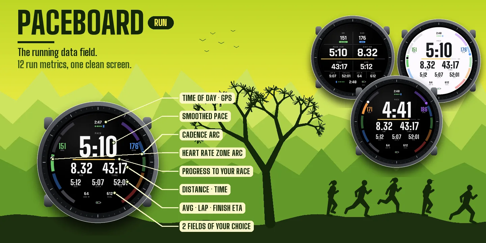
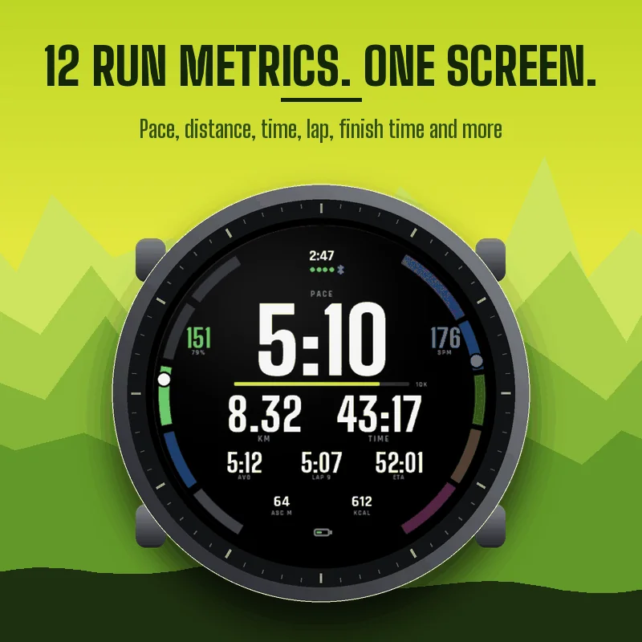
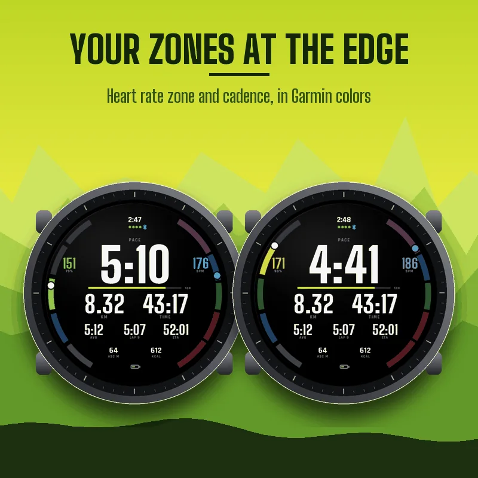
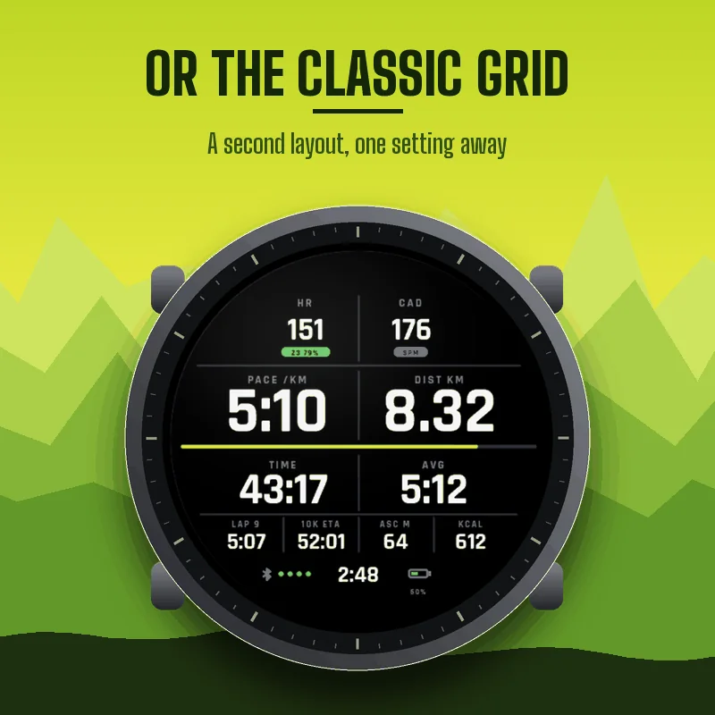
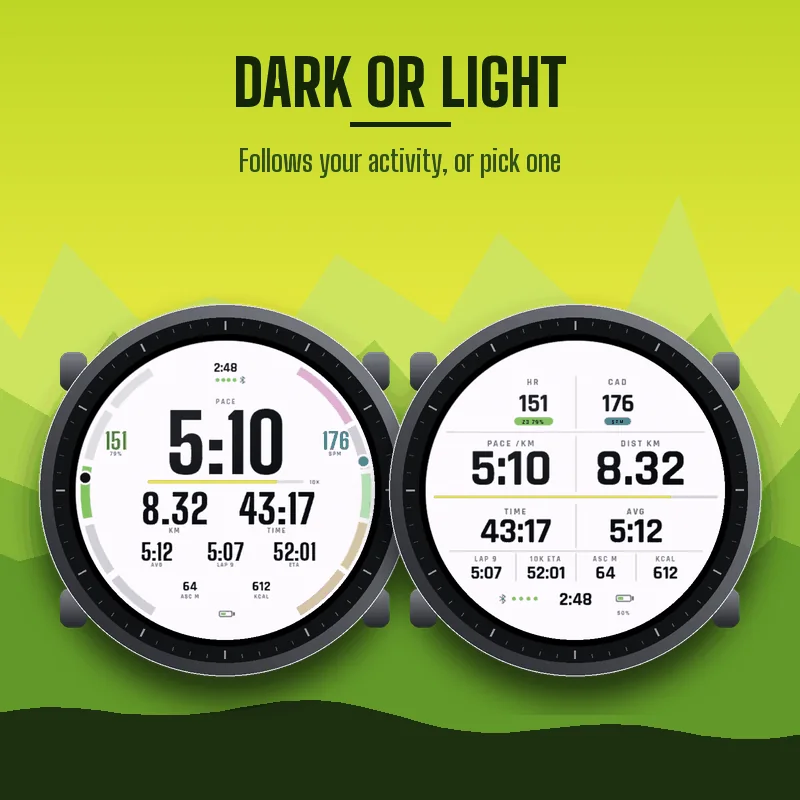
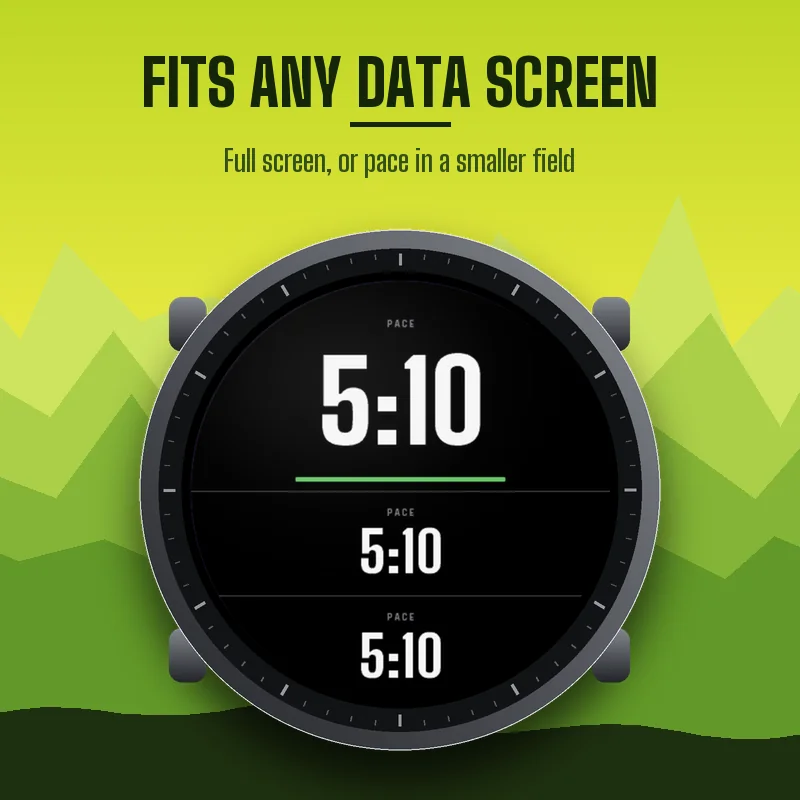

How to add it to your run
PACEBOARD RUN is a running data field: it lives inside the Run activity of your watch. Press START, choose Run, then hold UP (or open the menu), go to Run Settings, Data Screens, add a new screen or edit one, set the layout to 1 field, select the field, open Connect IQ fields, and select PACEBOARD RUN. Menu names can differ slightly between watches. If the field does not show up right after installing, restart the watch once.
12 run metrics on one screen
Smoothed pace, distance, timer, average pace, lap pace with the lap number, finish time prediction, heart rate with zone and percent of max, cadence, two fields of your choice, time of day, GPS signal, phone connection and watch battery. Big numbers where they matter, small ones where they don't, and every number shrinks to fit when it gets longer (a timer past one hour, a marathon finish time).
Your zones at the edge
In the Halo layout, the left edge of the screen shows your heart rate zone in five segments, with a dot moving inside the current zone. The right edge shows your cadence on the Garmin cadence colors. You can read both without reading a number.
Finish time prediction
Pick 5K, 10K, half marathon, marathon or any distance. PACEBOARD RUN shows when you will finish at your average pace so far, and a bar fills up as you get closer. Once you pass the distance, it shows your actual time.
Two layouts, dark or light
Halo (rings at the edge, huge pace) or Classic (a clean grid). Dark, light, or the same background as your activity.
Settings
On your phone: Garmin Connect, your device, Activities and Apps, Data Fields, PACEBOARD RUN, Settings. On the watch, the Connect IQ field has its own settings menu.
- Layout: Halo or Classic.
- Background: same as activity, dark or light.
- Pace smoothing: raw, 3, 5, 10, 15 or 30 seconds (5 by default).
- Finish prediction: 5K, 10K, half marathon, marathon or a custom distance in meters.
- Lap field: current lap pace, last lap pace or current lap time.
- Bottom fields: ascent, calories, power, altitude, average heart rate, average cadence, descent, max heart rate or temperature.
- Heart rate zones: your Garmin profile zones, or 50 to 90 percent of a max heart rate you enter.
- Garmin Connect graphs: on or off.
Running economy in Garmin Connect
Two extra charts are saved with your activity: running economy (meters per heartbeat) and energy expenditure (kcal per minute, as given by your watch). The activity summary also gets three averages: efficiency factor (yards per minute per bpm), heartbeats per km, and distance per 100 kcal. Turn graphs off if another site does not accept them.
Good to know
Units follow your watch settings. On a bike profile, speed replaces pace. In a smaller field (2 or 3 fields on the screen), PACEBOARD RUN shows your pace in big type. Temperature comes from the watch sensor (or a paired temperature sensor) and reads warmer on the wrist. If a sensor has no value, the field shows -- rather than a made-up number.